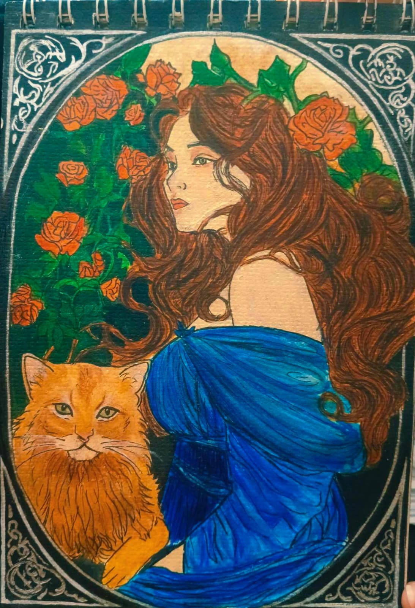
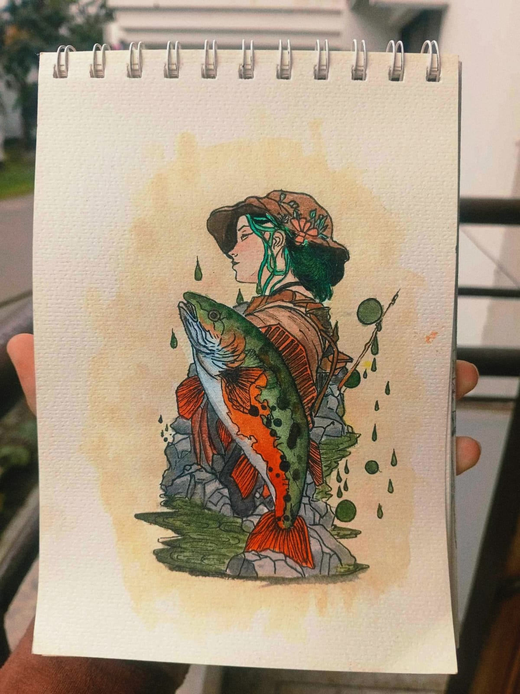
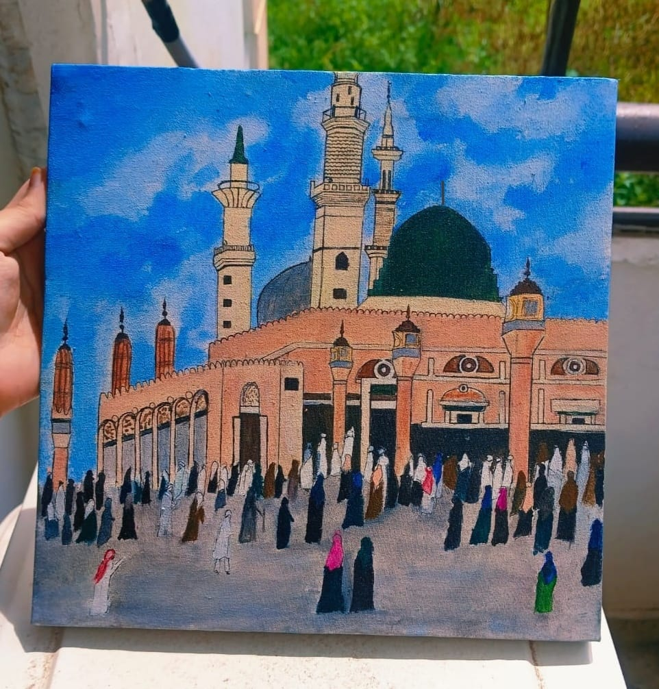
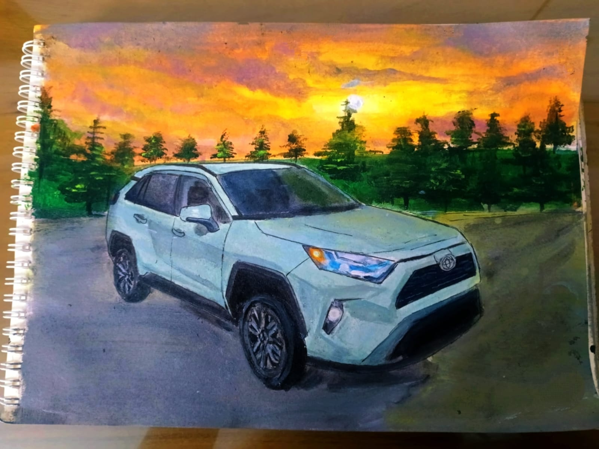

About Drawing
Drawing is a form of visual art where an artist creates images using lines, shapes, and textures. It can be done with various tools like pencils, pens, charcoal, ink, pastels, or digital devices.
Reference:



Drawing is a form of visual art where an artist creates images using lines, shapes, and textures. It can be done with various tools like pencils, pens, charcoal, ink, pastels, or digital devices.